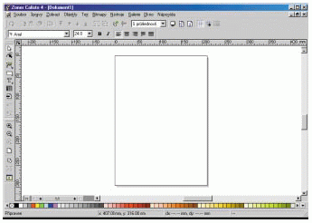
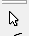
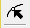
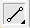
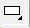
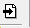
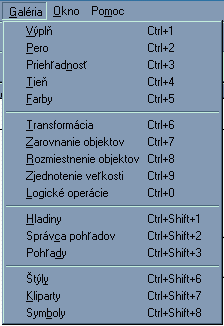

|  | Okno je klasické okno windows aplikácie so svojím menu, základnım panelom nástrojov (naboku),alternatívny panel nástrojov (hore) panelom farieb (dole) a pracovnım stolom (uprostred) na ktorom je polo�enı papier zvolenej ve¾kosti (napr. A4). Èoko¾vek na papier nakreslíme bude na tlaèiarni vytlaèené. Kresli� mo�no samozrejme aj mimo papier (pomocné kresby). Alternatívny panel sa mení pod¾a vo¾by nástroja zo základného panelu nástrojov. |
- Vıber a editácia objektov - biela prázdna šipka 
- Pomocou tohto nástroja mo�no oznaèova� objekty - klik ¾avım, pridáva� do vıberu - Shift + klik ¾avım.
Vybranı objekt potom mo�no presúva� po ploche - �ahaním, meni� meni� ve¾kos� objektu , otáèa� - kliknem na objekt
- Tvarovanie objektov - èierna šipka 
-
Pomocou tohoto nástroja mo�no zvolenı objekt meni�. Ide o mo�nosti zmeny tvaru, pridávanie bodov, zmena typu èiary a pod.
- Krivky 
- Tımto nástrojom mo�no kresl� èiary (úseèky, bezierove krivky, vo¾nou rukou)
- Plochy 
- Kresba základnıch geometrickıch plošnıch útvarov
- Text

- Písanie be�ného i umeleckého písma
- Tabu¾ka
- umo�ní vklada� do obrázka tabu¾ky
- Obrázky 
- umo�ní vklada� obrázky z externıch súborov
- Galéria
- Tieto nástroje sú k dispozícií cez menu.
 - vıplò - vzorky na vıplò plošnıch objektov
- pero - nastavenie vlastnosti èiar
- prieh¾adnos� - nastavenie priesvitnosti objektu
- tieò - objektu mo�no prida� tieò a tie� nastavi� vzh¾ad tieòa
- Farby - mo�nos� vybra�/prida� farbu a namieša� farbu
- Transformácia - nastavenie presnej ve¾kosti objektu, mo�nos� skosi� objekt v oboch smeroch
otáèanie objektu o presnı uhol okolo niektorého vıznamného bodu objektu
nástroje na zarovnanie objektov v smere vertikálnom i horizontálnom
nastavenie rovnakıch rozostupov pre oznaèené objekty
robi� "logické operácie" medzi objektami - zjednotenie, prienik, vyrezanie
zkombinova� objekty dokopy
- Zobrazenie siete
- Body zobrazíme pomocou menu Zobrazi� - Sie�. Zobrazené body sú len pomocné - nie sú súèas�ou obrázka.
- Nastavenie hustoty bodov
- Cez menu Súbor - Nastavenie dokumentu - zvolíme kartu Sie� a nastavíme vzdialenosti bodov v oboch smeroch
|